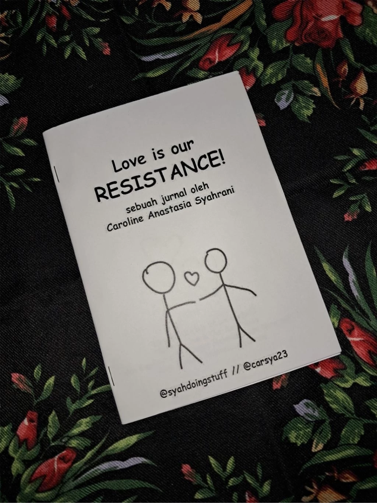
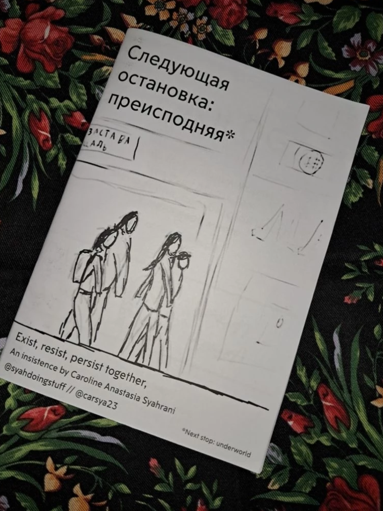

ZINES

Love is our Resistance
A short zine about how love is a form and resistance, and the ideal way to form love and relationship.

Next Stop: Underworld
A zine about my journey exploring the unknown side of Russian queer and punk community.